Blog › Mezcla de colores con fibras y lápices: capas, degradados y combinaciones
Post semanal #6 · color
Mezcla de colores con fibras y lápices: capas, degradados y combinaciones
Guía para mezclar colores con fibras y lápices de colores: colores primarios y secundarios, capas suaves, rayado cruzado, de claro a fuerte, degradados, cómo combinar fibra y lápiz y errores típicos, con las diapositivas reales de los tutoriales del canal.
16 diapositivas · 18/11/2026
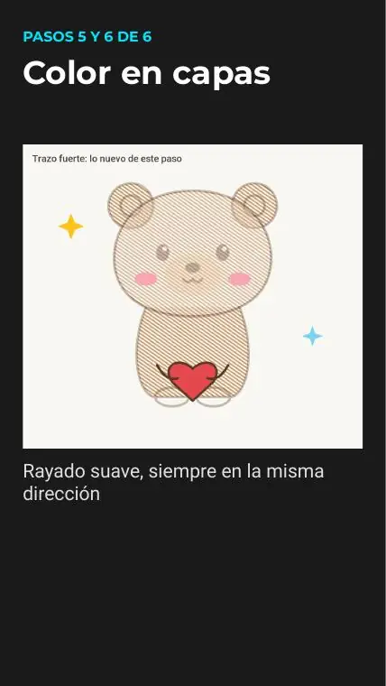
Antes de arrancar
Qué vas a aprender
- Por qué con fibras y lápices el color se mezcla en capas y no en la paleta.
- Qué colores salen al combinar los primarios (y cuáles conviene comprar).
- Cómo pintar con lápices de colores en capas suaves y cruzadas.
- Cómo trabajar las fibras del claro al fuerte sin manchar.
- Cómo hacer un degradado y cómo combinar fibra y lápiz en el mismo dibujo.
- Los errores más comunes y cómo evitarlos.
Practicás con los tutoriales de color del canal: estrella con fibras, perrito kawaii con fibras y osito con lápices de colores.
@Arteexperimentalv5x
Materiales
Fibras y lápices: qué necesitás
Fibras: una oscura para el contorno y cuatro o cinco colores vivos. En la estrella del canal alcanza con amarilla, rosa y tres más para los destellos.
Lápices de colores: no hace falta una caja enorme. Con dos o tres tonos de cada color (un claro, un medio y uno oscuro) ya podés mezclar mucho.
Sumá una hoja lisa y gruesa: la fina se humedece con la fibra y se arruga con muchas capas de lápiz.

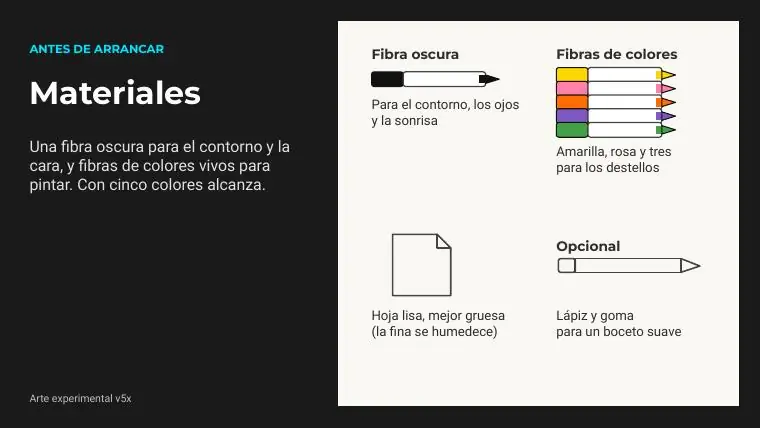
@Arteexperimentalv5x
La base
Primarios y secundarios
Con fibras y lápices no mezclás el color en un plato como con témpera: lo mezclás en la hoja, poniendo un color encima del otro. Las combinaciones básicas son las de siempre:
| Capa de abajo + capa de arriba | Resultado aproximado |
|---|---|
| Amarillo + azul | Verde |
| Amarillo + rojo | Naranja |
| Rojo + azul | Violeta |
| Un color + el mismo más oscuro | Sombra del mismo color |
| Un color + un poco de su opuesto (rojo y verde, azul y naranja) | Un tono más apagado, tipo marrón o gris |
El resultado cambia según la marca y el papel: probá cada mezcla en un costado de la hoja antes de usarla en el dibujo.
@Arteexperimentalv5x
Lápices · paso 1 de 3
Capas suaves y cruzadas
El secreto del lápiz de color es no apretar de entrada. En la ardilla del canal se pinta así:
- Primera capa: naranja suave, en diagonal.
- Segunda capa: naranja oscuro, cruzado sobre la primera y más fuerte en la cola.
- Al final, contorno con marrón y detalles (pasto y hojas).
Cada capa nueva se mezcla con la de abajo: así aparecen los tonos intermedios sin tener ese lápiz.

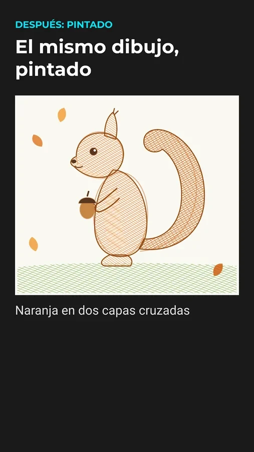
@Arteexperimentalv5x
Lápices · paso 2 de 3
Color en capas y siempre en la misma dirección
En el osito, el color se arma con rayado suave, siempre en la misma dirección: marrón y ocre de base, y rojo o rosa para los cachetes y el corazón.
Si querés mezclar dos colores (por ejemplo ocre y marrón), poné primero el más claro en toda la zona y después el oscuro solo donde va la sombra.

@Arteexperimentalv5x
Lápices · paso 3 de 3
Punta afilada y degradado
Con la punta bien afilada, las capas quedan parejas y los detalles, prolijos (es el consejo del Short de la ardilla).
Degradado con dos colores: pintá una franja de amarillo de punta a punta. Después pasá rojo desde un extremo, apretando fuerte al principio y aflojando a medida que avanzás. Queda rojo → naranja → amarillo sin saltos.

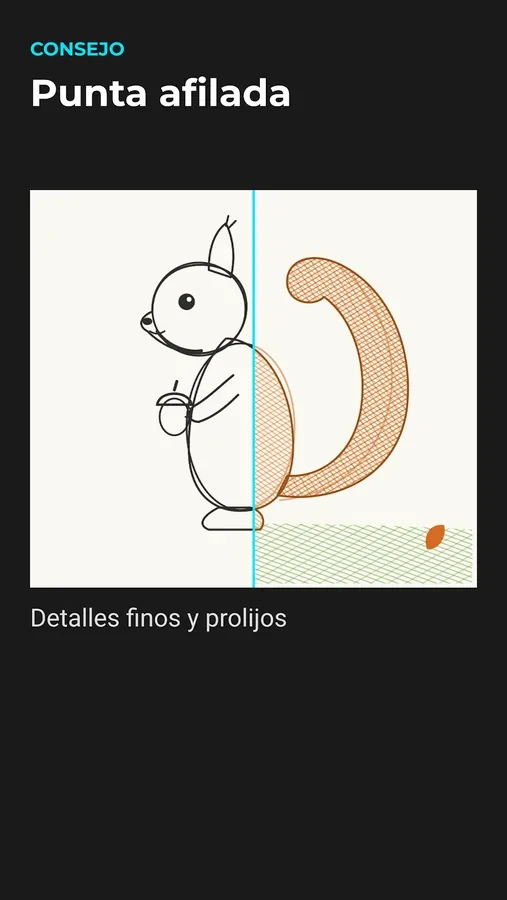
@Arteexperimentalv5x
Fibras · paso 1 de 3
Del claro al fuerte
La tinta de la fibra no se borra ni se aclara, así que el orden importa: siempre del color más claro al más fuerte.
En el cerdito kawaii se pinta todo con el rosa clarito, en la misma dirección, y el rosa fuerte va solo en el hocico y adentro de las orejas. Con tres rosas parecidos ya tenés luz, tono medio y sombra.

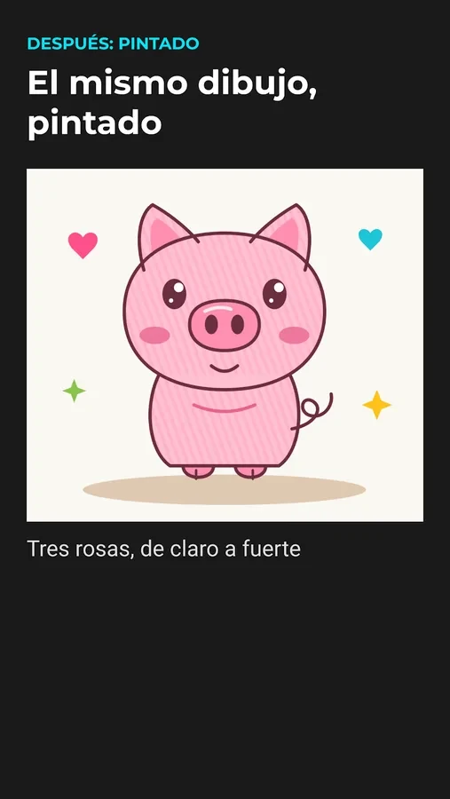
@Arteexperimentalv5x
Fibras · paso 2 de 3
Trazos en la misma dirección
Para que el relleno quede parejo, pintá con trazos siempre en la misma dirección y sin volver mil veces sobre el mismo lugar: si insistís, la hoja se mancha o se rompe.
En la estrella, el amarillo se pone con el contorno ya seco y esquivando la cara.

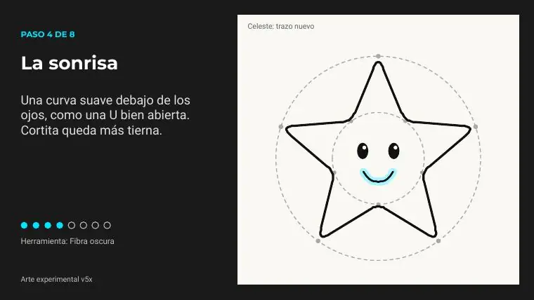
@Arteexperimentalv5x
Fibras · paso 3 de 3
Superponer fibras: esperá que seque
- Seco sobre seco: si pintás un color encima de otro ya seco, se suman y se oscurecen. Amarillo seco + una pasada de azul da un verde.
- Húmedo con húmedo: los bordes se funden un poco, pero es fácil que se forme una mancha. Probalo primero en un papelito.
- La fibra oscura del contorno: dejala secar antes de rellenar, para que no se corra sobre el color (así lo hacen la estrella y el cerdito).
- Detalles al final: cachetes, brillos y destellos van cuando el relleno ya está seco.
@Arteexperimentalv5x
Combinar
Fibra y lápiz en el mismo dibujo
- Base con fibra, sombra con lápiz: rellená con fibra clara y, cuando esté seca, sumá sombra o textura con lápiz de color encima. El lápiz se ve mejor sobre la fibra que al revés.
- Contorno con fibra fina oscura, color con lápices: es lo que pide el osito (lápices y una fibra fina).
- Fibra para los detalles fuertes: ojos, brillos y corazones con fibra; zonas grandes con lápiz para que no quede tan saturado.
Si la fibra se pasó de fuerte, no la tapes con más fibra: suele quedar barro. Mejor sumá una capa suave de lápiz para matizar.
@Arteexperimentalv5x
Ejercicio
Tu tabla de mezclas
Antes de pintar un dibujo, armá una tablita con tus propios colores:
- Dibujá una grilla de 4 × 4 cuadraditos.
- En la primera fila y en la primera columna poné, de un solo color, los que más uses (por ejemplo amarillo, rojo, azul y verde).
- En cada cruce pintá el color de la fila y, encima, el de la columna.
- Hacé una tabla con lápices y otra con fibras: vas a ver que dan resultados distintos.
Guardala: es tu guía para elegir colores sin probar sobre el dibujo.
@Arteexperimentalv5x
Ojo con esto
Errores típicos al mezclar colores
- Apretar el lápiz desde la primera capa: el papel se satura y las capas de arriba ya no agarran.
- Empezar por el color oscuro: con fibra no hay vuelta atrás. Siempre del claro al fuerte.
- Pintar encima de fibra húmeda: se mancha y se mezcla de más.
- Rayar en todas direcciones: el color queda desparejo. Elegí una dirección (o cruzá a propósito).
- Demasiados colores juntos: con dos o tres por zona alcanza; más, y se ensucia.
- Hoja muy fina: la fibra la traspasa y el lápiz la arruga.
@Arteexperimentalv5x
A practicar
Tutoriales y Shorts de color del canal
- Estrella con fibras: contorno oscuro, relleno amarillo en una dirección, cachetes y destellos.
- Perrito kawaii con fibras: color parejo, cachetes, mancha y colita.
- Osito con lápices de colores: color en capas con rayado suave.
- Ardilla con lápices de colores: dos capas cruzadas de naranja.
- Cerdito kawaii con fibras: tres rosas, de claro a fuerte.
Los tutoriales tienen las diapositivas en PDF para descargar.

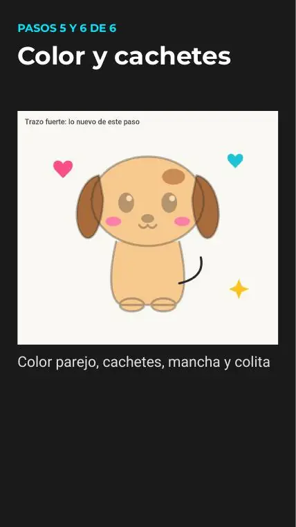
@Arteexperimentalv5x
Video
Cerdito kawaii con fibras: sin pintar y pintado
También: ardilla con lápices de colores · osito kawaii con lápices de colores · estrella con carita y fibras de colores
@Arteexperimentalv5x
Galería
Primero sin pintar, después pintado

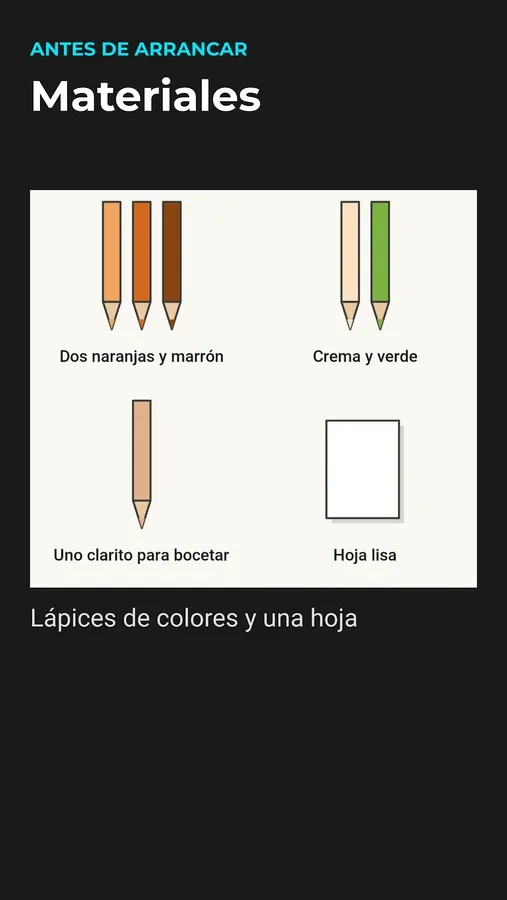

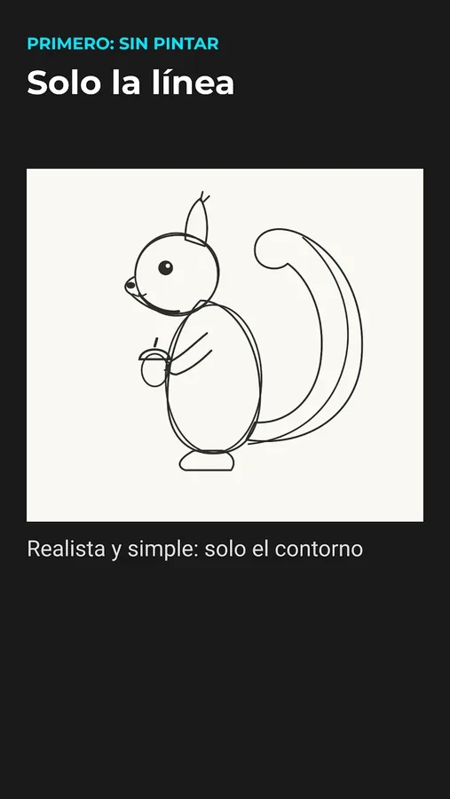

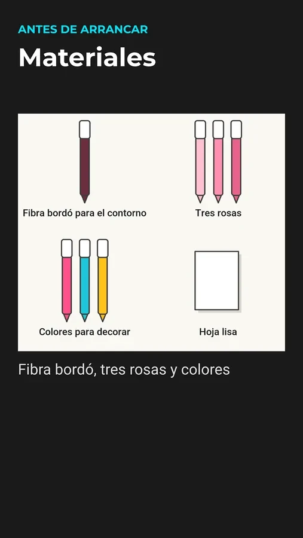

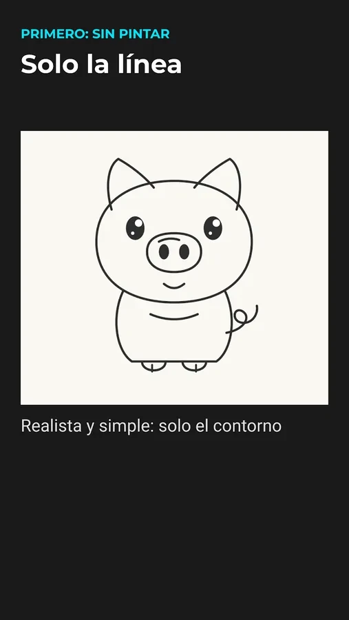

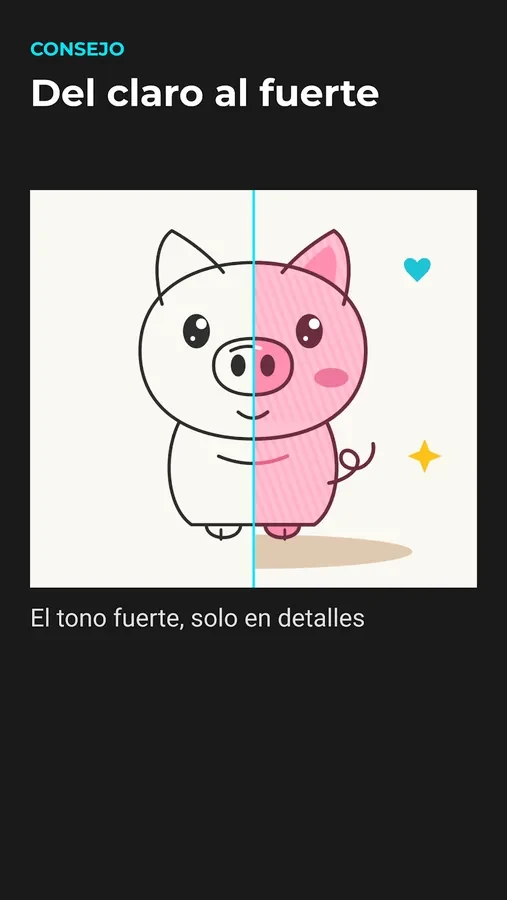
@Arteexperimentalv5x
¿Te gustó?
Seguí en el canal
Mostrá tu tabla de mezclas o tu dibujo pintado en los comentarios de los Shorts.
@Arteexperimentalv5x · Todos los tutoriales · Más posts del blog
@Arteexperimentalv5x
Publicado: 18/11/2026 · color, fibras, lápices de colores, técnica, principiantes